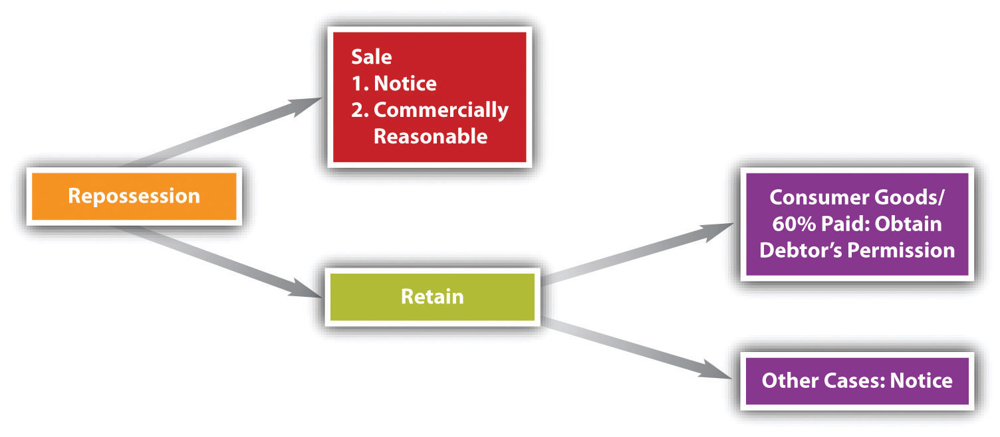

Upon default, the creditor must make an election: to sue, or to repossess.
After a debtor’s default (e.g., by missing payments on the debt), the creditor could ignore the security interest and bring suit on the underlying debt. But creditors rarely resort to this remedy because it is time-consuming and costly. Most creditors prefer to repossess the collateral and sell it or retain possession in satisfaction of the debt.
Section 9-609 of the Uniform Commercial Code (UCC) permits the secured party to take possession of the collateral on default (unless the agreement specifies otherwise):
(a) After default, a secured party may (1) take possession of the collateral; and (2) without removal, may render equipment unusable and dispose of collateral on a debtor’s premises.
(b) A secured party may proceed under subsection (a): (1) pursuant to judicial process; or (2) without judicial process, if it proceeds without breach of the peace.
This language has given rise to the flourishing business of professional “repo men” (and women). “Repo” companies are firms that specialize in repossession collateral. They have trained car-lock pickers, in-house locksmiths, experienced repossession teams, damage-free towing equipment, and the capacity to deliver repossessed collateral to the client’s desired destination. Some firms advertise that they have 360-degree video cameras that record every aspect of the repossession. They have “skip chasers”—people whose business it is to track down those who skip out on their obligations, and they are trained not to breach the peace.Here is an example of sophisticated online advertising for a repossession firm: SSR, “Southern & Central Coast California Repossession Services,” http://www.simonsrecovery.com/index.htm. See Pantoja-Cahue v. Ford Motor Credit Co., a case discussing repossession, in Section 33.5 "Cases".
The reference in Section 9-609(a)(2) to “render equipment unusable and dispose of collateral on a debtor’s premises” gets to situations involving “heavy equipment [when] the physical removal from the debtor’s plant and the storage of collateral pending disposition may be impractical or unduly expensive.…Of course…all aspects of the disposition must be commercially reasonable.”Uniform Commercial Code, Section 9-609(a)(2), Official Comment 6. Rendering the equipment unusable would mean disassembling some critical part of the machine—letting it sit there until an auction is set up on the premises.
The creditor’s agents—the repo people—charge for their service, of course, and if possible the cost of repossession comes out of the collateral when it’s sold. A debtor would be better off voluntarily delivering the collateral according to the creditor’s instructions, but if that doesn’t happen, “self-help”—repossession—is allowed because, of course, the debtor said it would be allowed in the security agreement, so long as the repossession can be accomplished without breach of peace. “Breach of peace” is language that can cover a wide variety of situations over which courts do not always agree. For example, some courts interpret a creditor’s taking of the collateral despite the debtor’s clear oral protest as a breach of the peace; other courts do not.
After repossession, the creditor has two options: sell the collateral or accept it in satisfaction of the debt (see Figure 33.5 "Disposition after Repossession").
Figure 33.5 Disposition after Repossession
Sale is the usual method of recovering the debt. Section 9-610 of the UCC permits the secured creditor to “sell, lease, license, or otherwise dispose of any or all of the collateral in its present condition or following any commercially reasonable preparation or processing.” The collateral may be sold as a whole or in parcels, at one time or at different times. Two requirements limit the creditor’s power to resell: (1) it must send notice to the debtor and secondary obligor, and (unless consumer goods are sold) to other secured parties; and (2) all aspects of the sale must be “commercially reasonable.”Uniform Commercial Code, Section 9-611; Uniform Commercial Code, Section 9-610. Most frequently the collateral is auctioned off.
Section 9-615 of the UCC describes how the proceeds are applied: first, to the costs of the repossession, including reasonable attorney’s fees and legal expenses as provided for in the security agreement (and it will provide for that!); second, to the satisfaction of the obligation owed; and third, to junior creditors. This again emphasizes the importance of promptly perfecting the security interest: failure to do so frequently subordinates the tardy creditor’s interest to junior status. If there is money left over from disposing of the collateral—a surplus—the debtor gets that back. If there is still money owing—a deficiency—the debtor is liable for that. In Section 9-616, the UCC carefully explains how the surplus or deficiency is calculated; the explanation is required in a consumer goods transaction, and it has to be sent to the debtor after the disposition.
Because resale can be a bother (or the collateral is appreciating in value), the secured creditor may wish simply to accept the collateral in full satisfaction or partial satisfaction of the debt, as permitted in UCC Section 9-620(a). This is known as strict foreclosureThe creditor takes the collateral, discharges the debtor, and has no right to seek any deficiency.. The debtor must consent to letting the creditor take the collateral without a sale in a “record authenticated after default,” or after default the creditor can send the debtor a proposal for the creditor to accept the collateral, and the proposal is effective if not objected to within twenty days after it’s sent.
The strict foreclosure provisions contain a safety feature for consumer goods debtors. If the debtor has paid at least 60 percent of the debt, then the creditor may not use strict foreclosure—unless the debtor signs a statement after default renouncing his right to bar strict foreclosure and to force a sale.Uniform Commercial Code, 9-620(e); Uniform Commercial Code, Section 9-624. A consumer who refuses to sign such a statement thus forces the secured creditor to sell the collateral under Section 9-610. Should the creditor fail to sell the goods within ninety days after taking possession of the goods, he is liable to the debtor for the value of the goods in a conversion suit or may incur the liabilities set forth in Section 9-625, which provides for minimum damages for the consumer debtor. Recall that the UCC imposes a duty to act in good faith and in a commercially reasonable manner, and in most cases with reasonable notification.Uniform Commercial Code, Section 1-203. See Figure 33.5 "Disposition after Repossession".
A secured party’s repossession of inventory or equipment can disrupt or even close a debtor’s business. However, when the collateral is intangible—such as accounts receivable, general intangibles, chattel paper, or instruments—collection by a secured party after the debtor’s default may proceed without interrupting the business. Section 9-607 of the UCC provides that on default, the secured party is entitled to notify the third party—for example, a person who owes money on an account—that payment should be made to him. The secured party is accountable to the debtor for any surplus, and the debtor is liable for any deficiency unless the parties have agreed otherwise.
As always in parsing the UCC here, some of the details and nuances are necessarily omitted because of lack of space or because a more detailed analysis is beyond this book’s scope.
Upon default, the creditor may bring a lawsuit against the debtor to collect a judgment. But the whole purpose of secured transactions is to avoid this costly and time-consuming litigation. The more typical situation is that the creditor repossesses the collateral and then either auctions it off (sale) or keeps it in satisfaction of the debt (strict foreclosure). In the former situation, the creditor may then proceed against the debtor for the deficiency. In consumer cases, the creditor cannot use strict foreclosure if 60 percent of the purchase price has been paid.